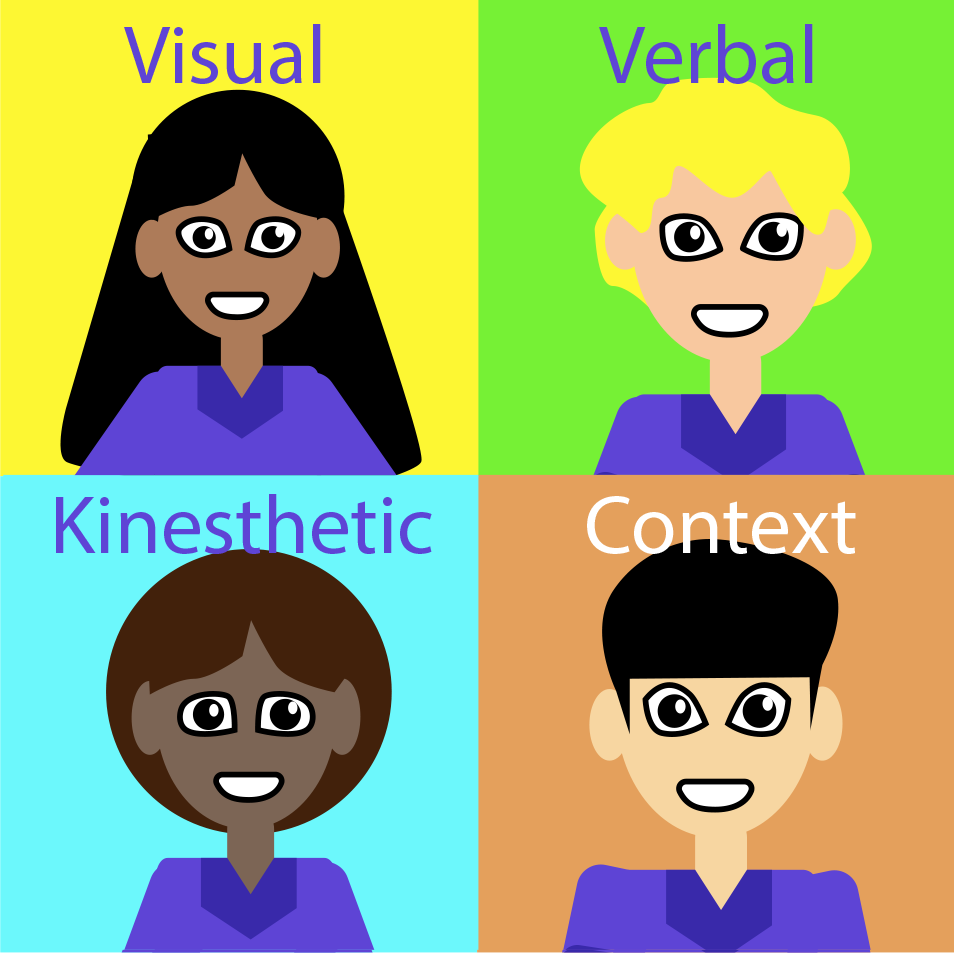

Everyone
Everyone learns in different ways and POWS is a resource for teachers to help them teach in different ways.
Lots of research has been done into the different ways people learn and these have been called learning styles.
Everyone learns in different ways and POWS is a resource for teachers to help them teach in different ways.
Lots of research has been done into the different ways people learn and these have been called learning styles.
Most people like to learn using a combination of learning styles, to illustrate this I'm going to introduce you to four learners.
Tanu is a visual learner.
She spends most of her day imagining and thinking in pictures.If she wants to communicate an idea she would rather draw a diagram or sketch a solution.
Tanu likes to take notes, she finds this helps her to remember what someone has said, sometimes she makes mind maps and other times she writes in lists.
If Tanu has a lot of information to remember she finds it easier to associate the information as part of a journey so she can visualise it all in her minds eye.
Eric is verbal learner.
He spends most of his day talking and listening. If he wanted to communicate an idea he would enjoying explaining and discussing.
Eric likes to watch videos or listen to Podcasts and finds it easy to remember what has been said.
If Eric needs to remember lots of information he uses a tape recorder to talk to himself and listen back to it later.
Oni is a kinesthetic learner.
She spends most of her day doing things. If she wanted to communicate an idea she would show you how to do it. Oni likes to physically do things and have a go for herself.
Oni finds that taking notes and doodling helps her remember but best of all physically being in a practical environment.
If Oni has a lot to remember she prefers to have hands on experience with the information.
Jian is a contextual learner.
He spends most of his days talking to people and doing activities. If he wanted to communicate an idea he would give you a real world example.
Jian likes things to make sense and to fit into his understanding of the world. He finds that by understanding where new information fits into what he already knows, it helps him to remember.
If Jian has a lot of information to remember he prefers to role play and act out a real world example.
Learning Theories are the academic research that has lead to the definition of learning styles.
VAK stands for: Visual, Auditory and Kinesthetic.
These are the 3 most common ways that people learn. The model was developed in the 1920's by psychologists to classify how people learn assigning a person to one of these categories.
A spin of from VAK was VARK which added in Reading/Writing.
ELPS stands for: Experience (with objects), Language (describe an experience), Pictures and Symbols.
The model was developed in the 1980's to explain how to teach mathematics. As mathematics was seen to be a hard subject for some children to grasp due to its abstract nature.
ELPS builds upon the idea that you need to show the same information in lots of different ways in order for it to be understood.
CPA stands for: Concrete, Pictorial and Abstract.
This model developed by J.Bruner explains that in order to understand an abstract concept you first have to introduced to it as something concrete i.e. a real world example.
Once you understand the real version you can describe the information through pictures, one step towards abstraction, and then through symbols.
For example, to introduce the concept of the number 10 I would show you ten physical objects (Concrete), then draw you 10 circles (Pictorial), and then right the digits 1 and 0 to represent the number 10 (Abstract).
Explains how people are on a Wholist/Analytic scale and an Imager/Verbaliser scale.
This model was introduced by Riding and Ranger in 1998 and explores how people process information: in parts (Analyst) or wholes (Wholist) and how they represent information, visually (Imager) or verbally (Verbaliser).
A Wholistic Imager is likely to want to see the big picture in a visual way before looking into the details.